Juho, Sveni, Macos ja Marko. Surffia, safari, teevuoret ja rantabaarit.
Kaksi tukikohtaa: viisi yötä etelärannikolla Weligamassa ja kaksi yötä Ellassa vuoristossa. Saavumme ja lähdemme eri aikoihin, joten heti alla näkyy, kuka on missäkin ja milloin.
Kuka on saarella milloinkin
Palkki alkaa laskeutumisesta ja päättyy lähtöön, tunnin tarkkuudella. Palkin väri kertoo, missä ollaan, ja alarivi näyttää yöpymiset.
Vieritä aikajanaa sivulle.
Colombo
Weligama
Ella
Negombo
Kotiin
Mitä lokakuu tarkoittaa
Lokakuu on välikautta kahden monsuunin välissä. Matka toimii hyvin, kun odotukset ovat oikeat.
Aamut kirkkaita, iltapäivisin ukkosta
Surffi ja vaellukset aamuun. Kevyt sadetakki mukaan.
Bilekausi vasta käynnistyy
Etelärannikon bilekausi on parhaimmillaan marras–huhtikuussa. Lokakuussa osa viikkobileistä pyörii, osa ei. Tarkistetaan Instagramista ennen lähtöä.
Kandy–Ella-juna ei kulje kokonaan
Ditwah-syklonin (marraskuu 2025) jälkeen Kandy–Nanu Oya on yhä korjauksessa. Nanu Oya–Ella kulkee, ja se on reitin kaunein osuus.
Yala kiinni, Udawalawe auki
Yalan lohkot 1 ja 2 olivat kuivuuden takia kiinni 15.10 asti. Udawalawe on auki ympäri vuoden ja reitillä.
Valasretket eivät kannata
Mirissan valaskausi on marras–huhtikuu.
Ei Poya-päivää matkan aikana
Seuraava alkoholiton täysikuupäivä on 25.10.
Päivä päivältä
Ajoajat ovat realistisia pakettiautoaikoja, ei Google Mapsin. Iltojen bileet ovat tarkemmin omassa osiossaan.
pe kenttä → Colombo
la → Weligama
to → Udawalawe → Ella
la paluu Negomboon
päiväretket
Kartta on suuntaa antava, ei mittakaavassa.
Colombo
pe 9.10, Juho ja Sveni
9perjantai
Saapuminen ja ilta kaupungissa
Juho laskeutuu klo 8.30 ja on kaupungissa noin tunnissa. Päivä omaan tahtiin: lepoa, Galle Face Green, Pettahin markkinat tai Gangaramayan temppeli.
Sveni laskeutuu klo 16.50 ja on kaupungissa noin klo 18–18.30. Illallinen ja Colombon kattobaarit.
Kyydit: PickMe/UberYö: Galle Face tai Kollupitiya
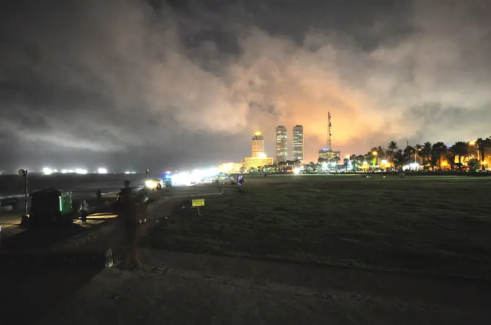
Galle Face Green, Colombon rantapuisto, illalla.
Weligama
la 10.10 – to 15.10, 5 yötä (Marko ma–to)
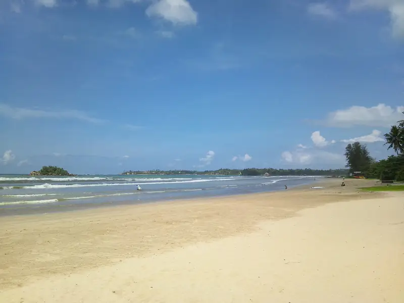
Weligaman lahti, saaren paras aloittelijaranta.
10lauantai
Macos kyytiin ja etelään
Rauhallinen aamu ja lounas Colombossa. Lähtö noin klo 14.30 tila-autolla kentälle, jossa Macos laskeutuu klo 15.45. Kaikki kolme ajavat moottoritietä etelään, perillä noin klo 19.30–20. Kuski seuraa lennon tilaa.
Illalla Secret Pearl Barin Rumble in the Jungle Weligamassa tai Doctor's House Madihassa (noin 40 min).
Tila-auto n. 100–105 $
11sunnuntai
Surffipäivä
Surffitunti Weligaman rannalla aamupäivällä, ilman ennakkovarausta suoraan koulujen kojuilta. Weligama on saaren paras aloittelijaranta.
Iltapäivällä Coconut Tree Hill ja Secret Beach Mirissassa.
Illalla Ahangama: Lamana, Hakuna Matata tai Mono-speakeasy.
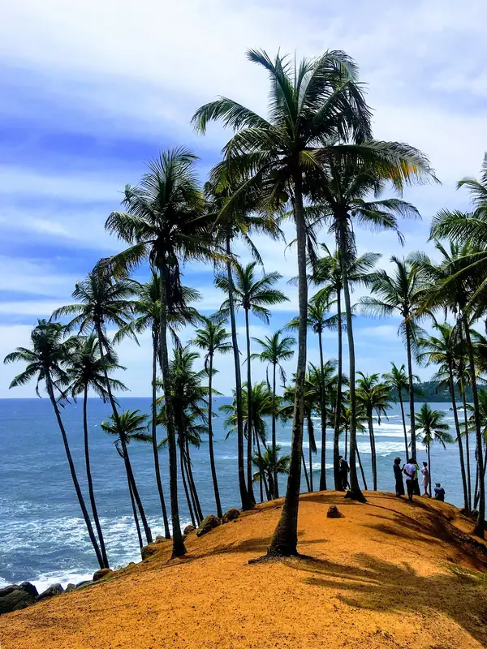
Coconut Tree Hill, Mirissa.
12maanantai
Hiriketiya ja Marko saapuu
Juho, Sveni ja Macos tekevät päiväretken Hiriketiyan hevosenkengän muotoiseen lahteen (noin 1–1,5 h suuntaansa). Lahti on lokakuussa etelän varmin surffipaikka. Kansikuva on sieltä.
Marko laskeutuu klo 14.15 ja on Weligamassa noin klo 18–18.30. Ilta rennosti, jaksajille Beach Break Surf Hostelin kattobileet.
Päiväretki Galleen noin 45 minuutissa. Matkalla Koggalan paalukalastajat (kuvista peritään maksu). Gallen linnoituksen muurit ja lounas muurien sisällä.
Illalla Doctor's House Madihassa (DJ:t ke ja la klo 18–24) ja jatkot viereisessä Shima Guni Beach Clubissa.
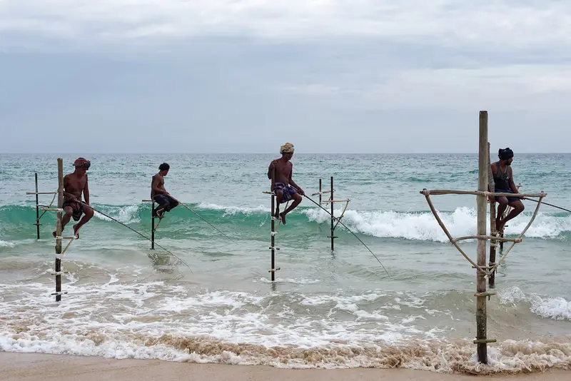
Paalukalastajat, Koggala.
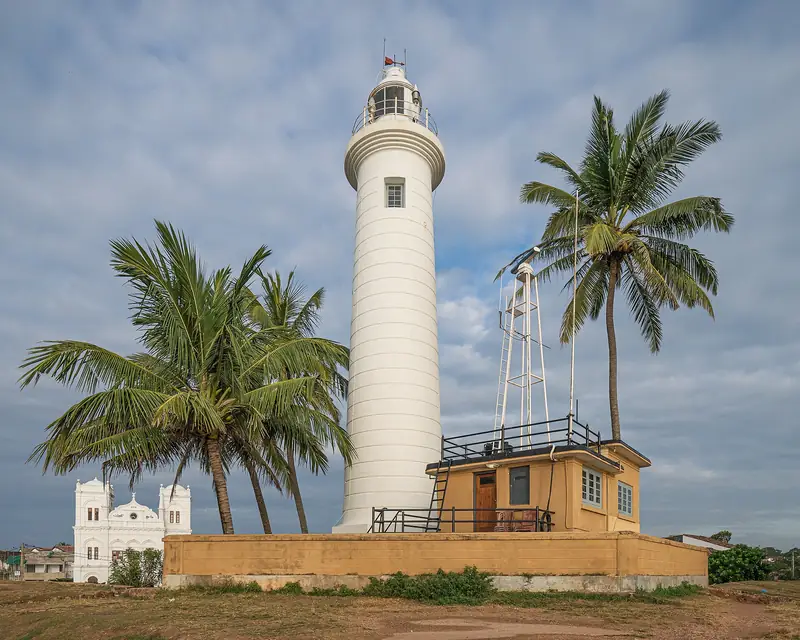
Gallen linnoituksen majakka.
Ella
to 15.10 – la 17.10, 2 yötä
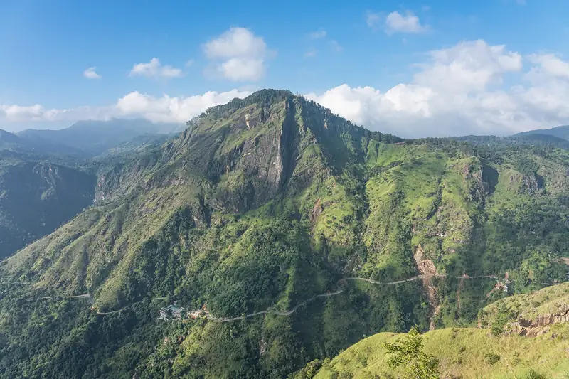
Näkymä Little Adam's Peakilta kohti Ella Rockia.
15torstai
Safari ja nousu vuoristoon
Lähtö noin klo 11.30. Udawalawessa noin klo 13.30, lounas ja iltapäivän jeeppisafari noin klo 14.30–17.30. Norsut ovat käytännössä varmoja.
Ellassa noin klo 19.30–20, viimeinen nousu ajetaan hämärässä. Kuski ja pakettiauto alkaa tästä.
Kuski ja pakettiauto alkaa
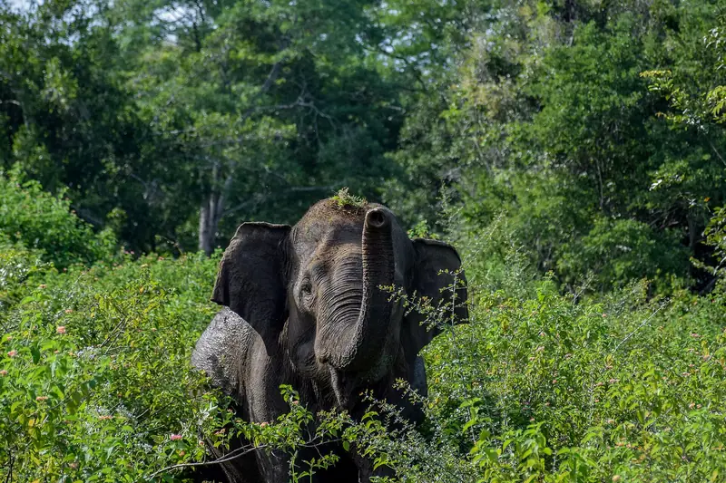
Aasiannorsu, Udawalawen kansallispuisto.
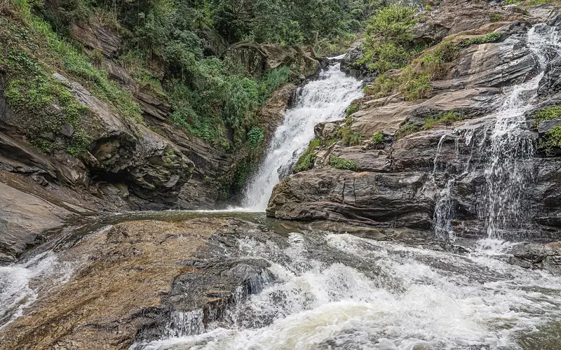
Ravana Falls Ellan tien varrella.
16perjantai
Ainoa kokonainen Ella-päivä
Valitaan toinen:
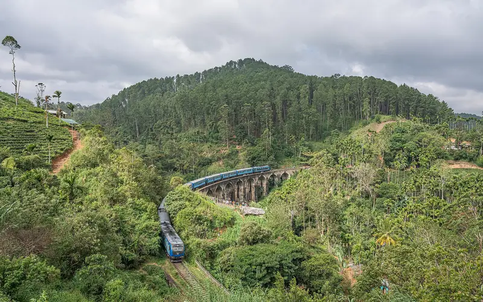
A: Ellan klassikot
Little Adam's Peak auringonnousuun, Ella Swing ja Flying Ravana -zipline. Iltapäivällä Nine Arch Bridge junan ylitysaikaan (aikataulu Ellan asemalta).
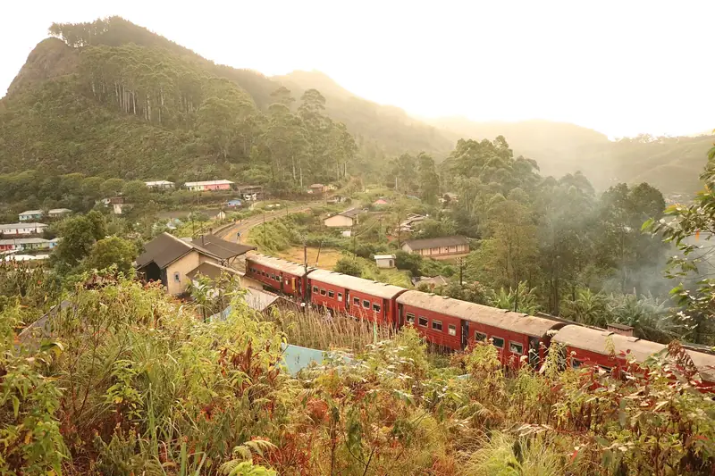
B: Junamatka
Kuski vie aamulla Nanu Oyaan (lähtö noin klo 6.45), juna klo 9 Ellaan noin 2,5 tunnissa. Iltapäivällä Nine Arch Bridge ja auringonlasku Little Adam's Peakilla. Paikkaliput 30 päivää etukäteen.
Illalla Cafe Chill ja pääkadun baarit.
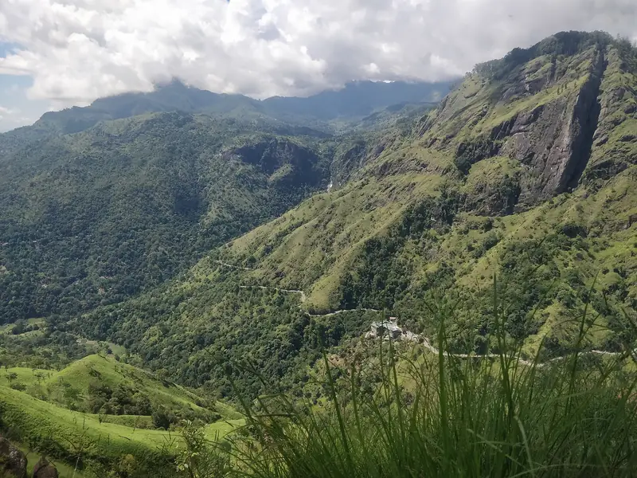
Ella Rock jää tällä kertaa väliin.
Negombo
la 17.10, viimeinen ilta
17lauantai
Paluu ja jäähyväisillallinen
Suora ajo Ellasta noin klo 9 alkaen, Negombossa noin klo 15.
Illalla yhteinen illallinen Negombon rannalla. Macos lähtee kentälle noin klo 21.30.
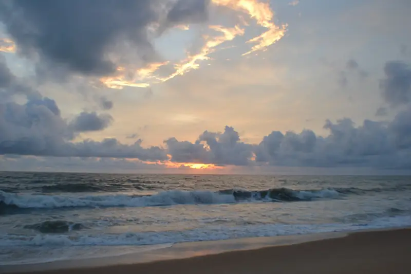
Negombon ranta illalla.
Kotiin
su 18.10
18sunnuntai
Aamulennot
Macos lensi jo klo 01.05. Juho (10.05), Sveni ja Marko (10.30) lähtevät hotellilta noin klo 7, kentälle on noin 20 minuuttia.
Kyydit
Pitkät siirrot yksityisellä kuskilla, lyhyet tuktukilla tai PickMe-sovelluksella. Kyydit hinnoitellaan auton mukaan, ei matkustajien.
Milloin
Kuka
Reitti
Miten
Arvio
pe 8.30
Juho
Kenttä → Colombo
PickMe/Uber
~1 h
pe 16.50
Sveni
Kenttä → Colombo
PickMe/Uber
1–1,5 h
la ~14.30
Juho, Sveni, Macos
Colombo → kenttä → Weligama
Tila-auto koko matkan
n. 100–105 $
ma 14.15
Marko
Kenttä → Weligama
Henkilöauto, kuski odottaa aulassa
n. 60–75 $
la–ke
Kaikki
Weligaman alue, päiväretket
Tuktuk, PickMe tai päiväkuski
–
to–la
Kaikki
Weligama → Udawalawe → Ella → Negombo
KDH-pakettiauto ja kuski, 3 päivää
n. 210–360 $ (70–120 $/pv)
la ~21.30
Macos
Negombo → kenttä
PickMe
~20 min
su ~7.00
Juho, Sveni, Marko
Negombo → kenttä
PickMe tai hotellin kyyti
~20 min
Pyydetään 2–3 tarjousta WhatsAppilla ja varmistetaan, että hintaan kuuluvat polttoaine, moottoritiemaksut ja kuskin majoitus.
Kuskille tippiä noin 5–10 $ päivältä.
Majoituksen kautta varattu kyyti on yleensä halvempi kuin kansainväliset välityssivustot.
Julkisilla (bussi 187 kentältä Colomboon ja juna tai pikabussi etelään) pääsee halvalla, mutta matka kestää 4–7 tuntia.
Matkustusaika yhteensä
Laskettu yllä olevista ajoajoista: pitkät siirrot ja päiväretket, ei iltojen kyytejä. Luvut ovat arvioita.
Juho, Sveni
n. 21 h
Macos
n. 18 h
Marko
n. 16 h
Siirrot
Päiväretket (Hiriketiya 2–3 h, Galle n. 1,5 h)
n. 5–5,5 hla 10.10Colombo → kenttä → Weligama, sisältää Macosin odottelun kentällä
n. 4–4,5 hto 15.10Weligama → Udawalawe → Ella, lisäksi 3 h jeeppisafari
n. 6 hla 17.10Ella → Negombo, pisin yhtäjaksoinen ajo
Päälle mahdollisesti: Ellan vaihtoehto B noin 4,5 h (ajo Nanu Oyaan noin 2 h ja juna 2,5 h) sekä iltojen tuktuk-kyydit, arviolta 2–4 h koko viikolla. Madihaan on noin 40 min suuntaansa.
Illat
Etelärannikon viikkorytmi sovitettuna meidän päiviimme. Kalenteri perustuu kevään sesonkiin, joten tilit tarkistetaan ennen lähtöä.
Hiriketiyan Secret Jungle Party (@secret_jungle_party) pyörii perjantaisin ympäri vuoden, mutta osuu meillä Colombo- ja Ella-perjantaille. Sisäänpääsyt maksetaan yleensä käteisellä, noin 1 000–5 000 rupiaa. Kotimatka PickMella, ei bilepaikan edestä otetulla tuktukilla.
Varaukset
Ruksaa sitä mukaa kun asiat on hoidettu.
0 / 11 hoidettu
Ruksit tallentuvat vain tämän laitteen selaimeen. Muut eivät näe niitä, ja ne voivat kadota, jos selaimen tiedot tyhjennetään.
Käytännöt
Maahantulo ja raha
ETA haetaan ennen lentoa.
Rupiat automaatista. Käteistä tuktukeihin, sisäänpääsyihin ja kojuihin.
Dialogin SIM tai eSIM saapumisaulasta.
Meri ja terveys
Lokakuussa voimakkaita ripivirtoja. Uidaan siellä missä paikallisetkin, ei kännissä.
Denguehyttyset: hyttysmyrkky mukaan.
Kulkukoiria ei silitetä.
Kunnioitus ja laki
Huumelait ovat äärimmäisen ankarat.
Ei kuvia selkä Buddha-patsaaseen päin, ei näkyviä Buddha-tatuointeja. Temppeleihin olkapäät ja polvet peitettyinä.
Jalokivikaupat ja "temppeli on tänään kiinni" -kuskit ovat huijauksia.